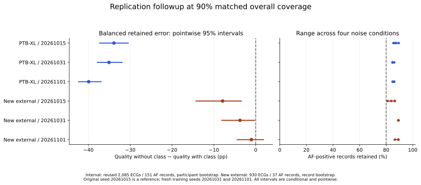

ECG RELIABILITY / INTERACTIVE RESEARCH COMPANION
Keep most ECGs.
Lose most AF cases?
A filter can look good overall while dropping the cases it needs to keep. Explore what happened in this single-lead ECG benchmark.
Unpublished research · Actual aggregate study results · No live diagnosis
01 / ORIGINAL BENCHMARK RESULTS
Who makes it through the filter?
AF means atrial fibrillation. “Retained” means the model issues a classification; “deferred” means it withholds one. Deferral does not mean a case is healthy.
These are saved, matched-coverage comparisons, not live model outputs. Rankings are cut to keep the selected fraction of records; actual coverage differs slightly because counts are whole numbers.
Loading verified study results…
AF cases retained
Error among retained ECGs
All retained records, both classes
Balanced retained error
Average of AF and non-AF error rates
AF cases: retained versus deferred
Retained Deferred
The 80% AF-retention criterion is this study’s research requirement, not a clinical safety standard.
Retained does not mean detected
- Retained AF, correctly called AF
- Retained AF, incorrectly called non-AF
- AF cases deferred
A deferred AF case is outside the retained-case error denominator. These outcomes are why a low overall error alone can be misleading.
Compare with keeping every ECG
Same fixed classifier and noise condition, with no cases deferred. “Balanced” gives each class equal weight; overall error is influenced by the much larger non-AF group.
Same condition. Same target coverage. Different filters.
| Method | All retained | AF retained | Overall error | Balanced error | AF correctly classified / all 151 AF cases |
|---|
The exploratory method was assessed after the primary analysis. Its favorable results do not establish independently replicated superiority.
What happens as coverage changes?
Points are the three evaluated coverage settings. Connecting lines are visual guides, not estimates of intermediate settings. Both vertical scales run from 0% to 100%.
02 / SYNTHETIC WAVEFORM DEMONSTRATION
What does more noise look like?
This generated signal illustrates the selected noise level. It is not a participant’s ECG, does not reproduce the study’s recorded artifact, and is not passed through a classifier. The controls above change the actual-result lookup and this illustration separately.
24 dB illustration5 seconds · arbitrary amplitude · shared vertical scale
Synthetic clean signal Synthetic signal + illustrative noise
Lower signal-to-noise ratio (dB) means stronger noise relative to signal. At 0 dB their powers are equal; 0 dB does not mean clean.
03 / REPLICATION FOLLOWUP · OCTOBER 15, 2026
Did the promising change survive another test?
The internal gains held after retraining. External improvement remained uncertain for one model.
I tested the quality-without-predicted-class method with two fresh training seeds and a new external sample selected before reading its labels. The plan and implementation were committed before prediction evaluation.
- 2
- fresh training seeds
- 930
- new eligible external ECG records
- 37
- AF-positive records in that sample
All five new comparisons retained at least 80% of AF cases at every primary noise level. Four met the combined error-improvement and retention rule. The fifth had a 95% improvement interval crossing zero, so the complete locked replication requirement was not met.
| Evaluation | Error difference (pp) | 95% interval (pp) | Lowest AF retention | Comparison rule |
|---|---|---|---|---|
| New external sample / original model | -7.91 | [-14.26, -3.44] | 81.08% | Met |
| Reused internal test / fresh model A | -35.07 | [-37.86, -31.96] | 84.77% | Met |
| New external sample / fresh model A | -3.76 | [-8.10, -0.32] | 89.19% | Met |
| Reused internal test / fresh model B | -39.94 | [-42.36, -36.96] | 84.77% | Met |
| New external sample / fresh model B | -1.03 | [-4.43, 1.87] | 86.49% | Not met |
Fresh models A and B use seeds 20261031 and 20261101. Internal intervals resample participants; external intervals resample records because reliable patient linkage is unavailable. These are pointwise intervals conditional on the fitted models and noise library.

The large internal gain is relative to a quality-plus-predicted-class ranker with 50% balanced error. It is not a 35–40 percentage-point gain over keeping every ECG. The full report also compares unfiltered and raw-confidence results.
Read the replication report All methods, fixed policies, new model weights, and limitations ↗Inspect the audit 630 metric rows and 150 explicit bootstrap checks ↗
The internal test participants and recorded noise source are reused. The external records are new to this evaluation, from a previously studied dataset; they do not establish patient-identity separation. One malformed provider header was excluded through a recorded implementation clarification, without replacement. The original primary conclusion and manuscript PDFs are unchanged.
04 / PAPER & EVIDENCE
The study behind the explorer
The PDFs cover the original frozen analysis. The replication report above is a separate dated addendum.
Waveform Quality, Confidence, and AF-Case Retention in Single Lead ECG Selective Classification: A Controlled Noise Benchmark
The primary comparison did not establish superiority: combined minus confidence-ranker balanced retained error was −0.2635 percentage points (95% participant-bootstrap CI −2.7034 to +1.1410). All four primary noise conditions failed the AF-retention criterion for the combined filter at 90% coverage.
One-page visual brief ↗Manuscript PDF ↗Supplement PDF ↗Download explorer data (CSV) ↓Code, models & results ↗
Reproduce the work Setup, figure generation, checks, and fixed-model replay ↗See what was verified 64 tests, aggregate checks, and the reproduced primary interval ↗
The public release includes the analysis code, fixed primary models, and aggregate evidence. Its tested replay reproduces the original primary test results; it is not new external validation.
Scope and limitations
The full cohort contains 15,292 ECG records from 13,796 participants. The displayed final test set has 2,085 ECGs from 1,812 participants: 151 AF-positive and 1,934 non-AF records. Retention counts refer to records, not unique participants.
The classifier uses lead II extracted from PTB-XL clinical 12-lead recordings. The noisy results here use the withheld recorded em artifact source, at 24, 12, 6, and 0 dB. Development used other artifact sources. This is a controlled benchmark, not prospective wearable or clinical validation.
Primary uncertainty is conditional on fixed fitted models and the assigned noise library. The dashboard shows point estimates, not new significance tests. The replication followup above tests fresh training seeds and new external records; the complete locked replication requirement was not met.
Only aggregate tables are published here. No source ECGs, participant identifiers, or individual predictions are used in the explorer.